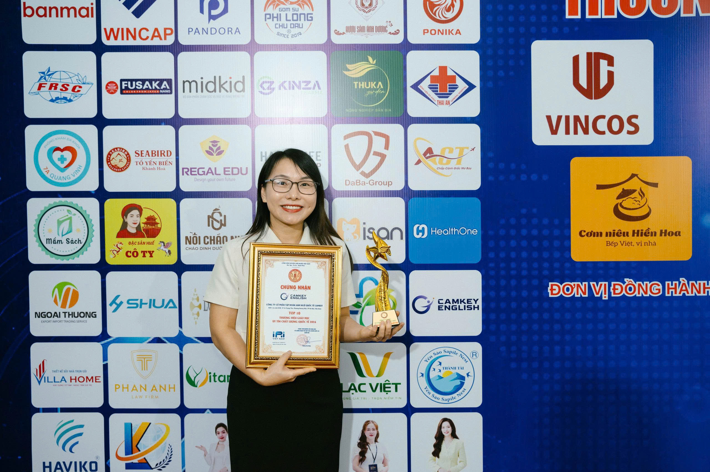
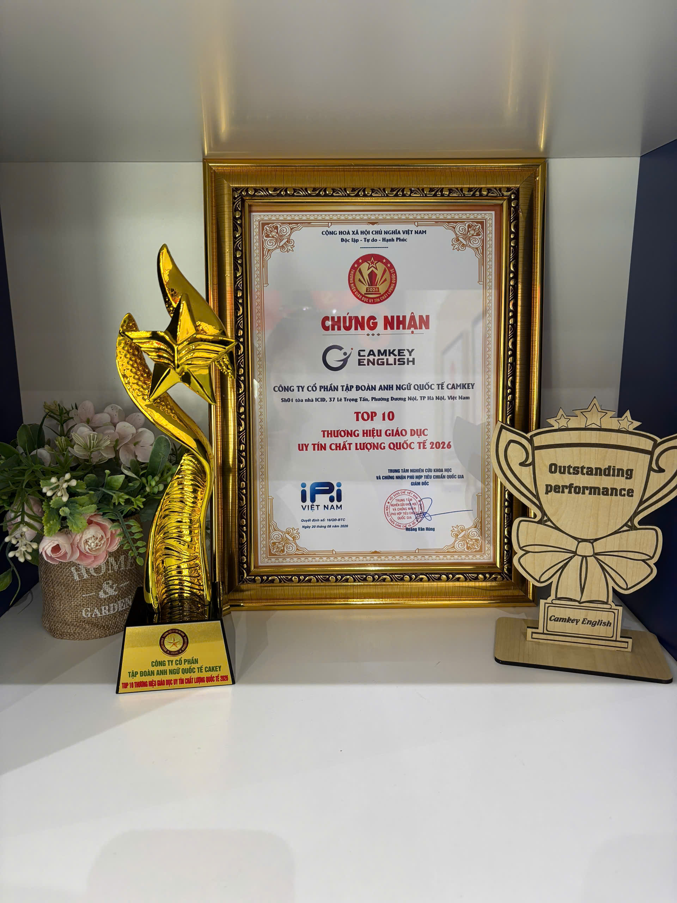

Camkey English được vinh danh Top 10 Thương hiệu Giáo dục Uy tín Chất lượng Quốc tế 2026

Ngày 23 tháng 8 năm 2026 là một ngày thật đặc biệt đối với tôi và tập thể Camkey English. Tại Lễ công bố Thương hiệu Giáo dục Uy tín Chất lượng Quốc tế 2026 tổ chức tại Hà Nội, Công ty Cổ phần Tập đoàn Anh ngữ Quốc tế Camkey đã được vinh danh trong Top 10 Thương hiệu Giáo dục Uy tín Chất lượng Quốc tế 2026.
Khi cầm trên tay tấm chứng nhận và biểu trưng của chương trình, tôi cảm nhận rõ niềm vui, sự biết ơn và cả trách nhiệm lớn lao. Đây không chỉ là một dấu mốc dành cho một thương hiệu. Với tôi, đó còn là sự ghi nhận cho hành trình bền bỉ của một tập thể luôn đặt học sinh, phụ huynh và chất lượng giáo dục ở vị trí trung tâm.
Một dấu mốc được tạo nên từ rất nhiều nỗ lực
Phía sau khoảnh khắc trên sân khấu là những ngày đội ngũ Camkey English cùng nhau xây dựng bài giảng, chăm chút từng hoạt động học tập, lắng nghe phản hồi của phụ huynh và đồng hành với từng học sinh. Có những nỗ lực không xuất hiện dưới ánh đèn sân khấu, nhưng lại là nền tảng quan trọng nhất để Camkey tiến về phía trước.
Tấm chứng nhận hôm nay vì thế thuộc về tất cả những người đã cùng góp sức cho hành trình ấy: đội ngũ giáo viên, nhân sự Camkey English, các bậc phụ huynh đã tin tưởng và đặc biệt là các con học sinh đã luôn cố gắng mỗi ngày.

Sự ghi nhận cũng là lời nhắc về trách nhiệm
Mỗi danh hiệu đều đáng trân trọng, nhưng điều quan trọng hơn là những gì chúng tôi tiếp tục làm sau dấu mốc này. Camkey English sẽ không xem đây là điểm đến, mà là lời nhắc để tập thể không ngừng hoàn thiện chất lượng chương trình, phát triển đội ngũ và tạo ra những trải nghiệm học tập ngày càng thiết thực, tích cực cho trẻ em.
“Một dấu mốc chỉ thật sự có ý nghĩa khi nó trở thành động lực để chúng ta tiếp tục làm tốt hơn mỗi ngày.”
Chúng tôi sẽ tiếp tục theo đuổi con đường giáo dục hạnh phúc: nơi trẻ được yêu thương, tôn trọng, khích lệ và phát triển toàn diện; nơi phụ huynh được lắng nghe; nơi giáo viên không ngừng học hỏi để truyền cảm hứng bằng chính sự tận tâm và chuyên nghiệp của mình.
Khoảnh khắc vinh danh Camkey English

Lời cảm ơn từ Camkey English
Tôi xin gửi lời cảm ơn chân thành tới đội ngũ Camkey English vì sự tận tâm và tinh thần đồng hành; cảm ơn các bậc phụ huynh đã trao gửi niềm tin; cảm ơn các con học sinh đã mang đến cho chúng tôi nguồn cảm hứng để bền bỉ với con đường mình lựa chọn.
Chặng đường phía trước chắc chắn còn nhiều việc phải làm. Nhưng với niềm tin, sự tử tế và tinh thần học hỏi không ngừng, Camkey English sẽ tiếp tục nỗ lực để xứng đáng với sự tin yêu ấy.
Mai Thị Thơm
Nhà sáng lập Camkey English